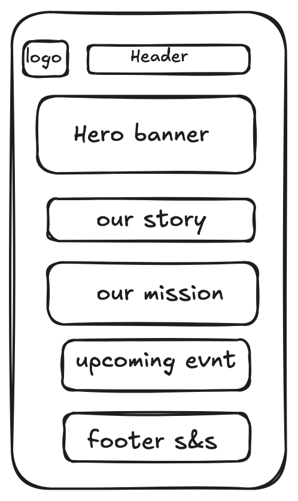
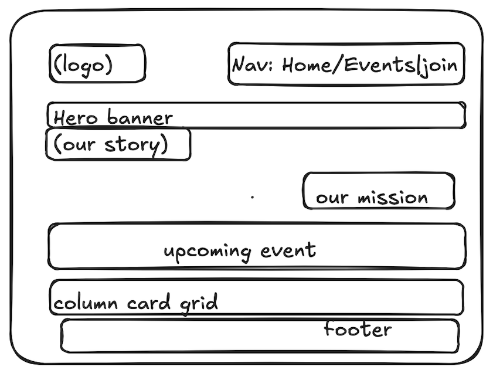

1. Site Name & Logo
Site Name: Diamond Narita (Proposed domain: diamondnarita.org)
Rationale: Diamond Narita is an active, growing Nepali community organization founded in 2021 in Narita, Japan. The crest logo features a royal blue and Nepali crimson shield topped with a crown, a central diamond, the motto “We shine together”, and the traditional sun and moon emblems from the flag of Nepal symbolizing unity, strength, and cultural pride among Nepali residents living in Narita.
2. Site Purpose
The purpose of this three page website is to serve as the central digital hub for Diamond Narita bringing together and supporting Nepali residents in Narita, Japan through local football tournaments, Nepali movie screenings, and mutual community aid. It showcases past program highlights using authentic community photography while enabling members to explore upcoming events and register online.
3. Target Audience & Scenarios
Target Audience: Nepali students, workers, families, and sports enthusiasts living in Narita and neighboring Chiba areas who want to stay connected with local cultural events, sports tournaments, and peer support networks.
Key Visitor Scenarios
- Scenario 1: “What upcoming programs, Nepali movie screenings, or community events are happening in Narita this month?”
- Scenario 2: “When and where is the next local football tournament, and how do I register my team?”
- Scenario 3: “How can I become a member of Diamond Narita or request local community support in Narita?”
4. Color Schema
Extracted directly from the Diamond Narita crest logo to ensure brand consistency and WCAG AA contrast compliance:
5. Typography
- Headings & Navigation (
Montserrat, Weights 600 & 700): Selected to match the clean, athletic geometric sans-serif lettering inside the Diamond Narita crest. - Body Copy, Event Cards & Forms (
Open Sans, Weights 400 & 600): Chosen for high legibility across desktop and mobile screens when reading event schedules, past movie recaps, and registration forms.
6. Site Architecture & Media Plan
- Home Page (
index.html): Features a hero banner with real Diamond Narita event photography, the organization's story since 2021, community mission pillars, and featured upcoming programs. - Activities & Events Page (
events.html): Dynamically renders 15+ past and upcoming football tournaments, Nepali movie screenings, and community aid drives from a JSON file, complete with category filters,localStoragesaved favorites, and detail modals. - Join & Community Support Page (
join.html+thankyou.html): Provides an accessible HTML form for club membership, sports/movie registration, or community assistance requests, passing submitted details to a confirmation page. - Photography Asset Plan: Original photos from Diamond Narita's past tournaments,
movie nights, and community programs will be optimized into
.webpformat with lazy loading for fast performance.
7. Home Page Wireframes (Mobile & Desktop)
Low-fidelity skeletal layouts illustrating responsive content flow across mobile (320px+) and desktop (1024px+) viewports:

